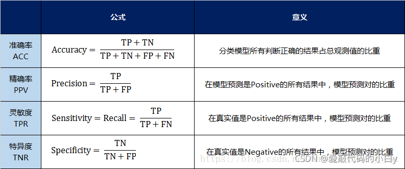
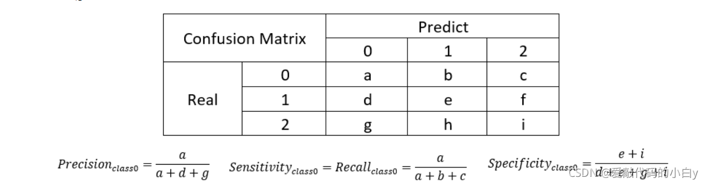
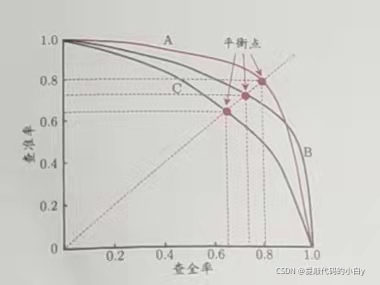
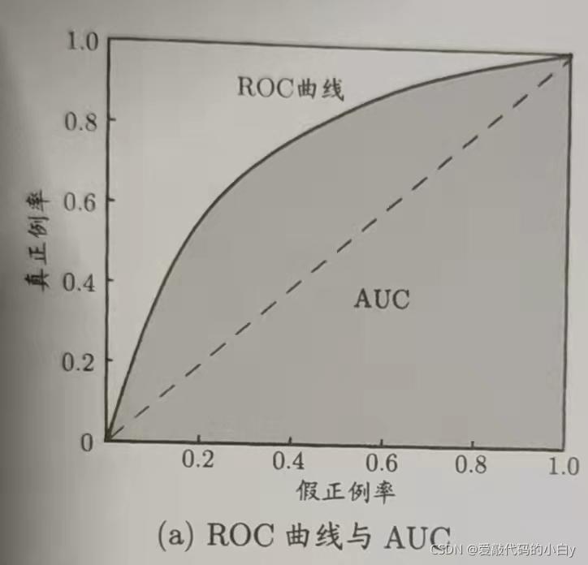
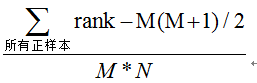

机器学习-Confusion Matrix混淆矩阵
a
一、混淆矩阵Confusion Matrix
在分类型模型评判的指标中，常见的方法有如下三种：混淆矩阵（也称误差矩阵，Confusion Matrix）、ROC曲线、AUC面积。混淆矩阵是ROC曲线绘制的基础，同时它也是衡量分类型模型准确度中最基本，最直观，计算最简单的方法。
以分类模型中最简单的二分类为例，对于这种问题，我们的模型最终需要判断样本的结果是0还是1，或者说是positive还是negative。
我们通过样本的采集，能够直接知道真实情况下，数据结果是positiveu或者negative。同时，我们通过用样本数据跑出分类型模型的结果，也可以知道模型认为这些数据是positive，还是negative。
1.1.一级指标（最底层的）：
真实值是positive，模型认为是positive的数量（True Positive=TP）
真实值是positive，模型认为是negative的数量（False Negative=FN）：这就是统计学上的第二类错误（Type II Error）
真实值是negative，模型认为是positive的数量（False Positive=FP）：这就是统计学上的第一类错误（Type I Error）
真实值是negative，模型认为是negative的数量（True Negative=TN）
，将这四个指标一起呈现在表格中，就能得到如下这样一个矩阵，我们称它为混淆矩阵（Confusion Matrix）：
| 混淆矩阵 | 预测值 | ||
|---|---|---|---|
| Positive | Negative | ||
| 真实值 | Positive | TP | FN |
| Negative | FP | TN |
预测性分类模型，肯定是希望越准越好。那么，对应到混淆矩阵中，那肯定是希望TP与TN的数量大，而FP与FN的数量小。
1.2.二级指标
但是，混淆矩阵里面统计的是个数，有时候面对大量的数据，光凭算个数，很难衡量模型的优劣。因此混淆矩阵在基本的统计结果上，通过最底层指标加减乘除得到二级指标：
准确率（Accuracy）—— 针对整个模型
精确率（Precision）
灵敏度（Sensitivity）：就是召回率（Recall）
特异度（Specificity）
我用表格的方式将这四种指标的定义、计算、理解进行了汇总：

通过上面的四个二级指标，可以将混淆矩阵中数量的结果转化为0-1之间的比率。便于进行标准化的衡量。
上述均为二分类，多分类结果如下：

1.3.P-R曲线

PR图直观地显示出学习器在样本总体上的查全率、查准率。
在进行比较时，若一个学习器的P-R曲线被另一个学习器的曲线完全“包住”，则可断言后者的性能优于前者，如图中学习器A的性能优于学习器C；
如果两个学习器的P-R曲线发生了交叉，如图中的A与B，则难以一般性地断言两者的优劣，只能在具体的查准率或查全率条件下进行比较。然而，在很多情形下，人们往往仍希望把学习器A与B比出个高低。这时一个比较合理的判据是比较P-R曲线下面积的大小，它在一定程度上表征了学习器在查准率和查全率上取得相对“双高”的比例。但这个值不太容易估算，因此，人们设计了一些综合考虑查准率、查全率的性能度量。平衡点就是这样一个度量。
“平衡点”(Break-Even Point，简称BEP)就是这样一个度量，它是“查准率=查全率”时的取值，如图中学习器C的BEP是0.64，而基于BEP的比较，可认为学习器A优于B优于C。
但是基于平衡点度量，过于简单，更常采用的是F1_score。
1.4.三级指标
（1）F1_score
在这四个指标的基础上在进行拓展，会产令另外一个三级指标，这个指标叫做F1 Score，称为平衡F分数（BalancedScore），它被定义为正确率和召回率的调和平均数。它的计算公式是（P代表Precision（精确率也称查准率），R代表Recall（召回率也称查全率））：
F1-Score指标综合了Precision与Recall的产出的结果。F1-Score的取值范围从0到1的，1代表模型的输出最好，0代表模型的输出结果最差。
*（2）Fβ*_Score
Fβ的物理意义就是将正确率和召回率的一种加权平均，在合并的过程中，召回率的权重是正确率的β倍。
β=1，认为recall和precision同等重要，即为F1-score；β>1，更看重recall，即看重模型对正样本的识别能力；β<1，则更看重precision，即看重模型对负样本的区分能力。
实际应用：
（1）如果是做商品推荐系统，则要在保证召回率recall理想的情况下，提升准确率precision；
（2）如果做疾病监测，则是要保证准确率precision的条件下，提升召回率recall。
总结：计算Precision，Recall，Specificity等只是计算某一分类的特性，而Accuracy和F1-Score是判断分类模型总体的标准。
二、ROC曲线
ROC全称是“受试者工作特征”(Receiver Operating Characteristic)曲线。
2.1.分类阈值对Precision/Recall的影响
学习器在做二分类时，以0.5为分类阈值，若预测概率>=0.5，则predict=1；若预测概率<0.5，则predict=0。
(1)增加阈值，我们会对预测值更有信心，即增加了查准率。但这样会降低查全率。（High Precision, Low Recall）
(2) 减小阈值，则模型放过的真例就变少，查全率就增加。（Low Precision, High Recall）
这个实值或概率预测结果的好坏，直接决定了学习器的泛化能力。实际上，根据这个实值或概率预测结果，我们可将测试样本进行排序，“最可能”是正例的排在最前面，“最不可能”是正例的排在最后面。这样，分类过程就相当于在这个排序中以某个“截断点”(cut point)将样本分为两部分，前一部分判作正例，后一部分则判作反例。
在不同的应用任务中，我们可根据任务需求来采用不同的截断点，例如若我们更重视“查准率”，则可选择排序中靠前的位置进行截断；若更重视“查全率”，则可选择靠后的位置进行截断。因此，排序本身的质量好坏，体现了综合考虑学习器在不同任务下的“期望泛化性能”的好坏。ROC曲线则是从这个角度出发来研究学习器泛化性能的有力工具。
2.2.ROC曲线的定义
与P-R曲线相似，我们根据学习器的预测结果对样例进行排序，按此顺序进行预测，每次计算出两个重要量的值，分别以它们为横、纵坐标作图，就得到了“ROC曲线”与P-R曲线。与P-R曲线使用查准率、查全率为纵、横轴不同，ROC曲线的纵轴是“真正例率”(True Positive Rate,简称TPR)，横轴是“假正例率”(False PositiveRate,简称FPR)，两者分别定义为：

（1）对角线为”随机猜测“模型，而(0,1)点表示所有正例排在所有反例之前的“理想模型”。
（2）曲线距离左上角越近,证明分类器判断正例的效果越好
（3）曲线距离右下角越近,证明分类器判断反例的效果越好
2.3.ROC与PR曲线的对比
因为ROC曲线有个很好的特性：当测试集中的正负样本的分布变化的时候，ROC曲线能够保持不变。在实际的数据集中经常会出现类不平衡（class imbalance）现象，即负样本比正样本多很多（或者相反），而且测试数据中的正负样本的分布也可能随着时间变化。而在面对正负样本数量不均衡的场景下，ROC曲线（AUC的值）会是一个更加稳定能反映模型好坏的指标。
三、AUC
虽然，用ROC 曲线来表示分类器的性能很直观好用，但当两个ROC曲线交叉时，则难以评判两者的优劣。于是Area Under roc Curve(AUC)就出现了。AUC的值就是处于ROC 曲线下方的面积的大小。通常，AUC的值介于0.5到1.0之间，较大的AUC代表了较好的性能。
3.1.从AUC判断分类器（预测模型）优劣的标准
（1）AUC = 1，是完美分类器，采用这个预测模型时，存在至少一个阈值能得出完美预测。绝大多数预测的场合，不存在完美分类器；
（2）0.5 < AUC < 1，优于随机猜测。这个分类器（模型）妥善设定阈值的话，能有预测价值；
（3）AUC = 0.5，跟随机猜测一样，模型没有预测价值；
（4） AUC < 0.5，比随机猜测还差；但只要总是反预测而行，就优于随机猜测。
总的来说，AUC值越大的分类器，正确率越高
3.2.计算AUC
目前我不太理解，仅仅是转载于:全面了解ROC曲线 | Public Library of Bioinformatics
（1）第一种方法:AUC为ROC曲线下的面积,那我们直接计算面积可得。面积为一个个小的梯形面积之和。计算的精度与阈值的精度有关。
（2）第二种方法:根据AUC的物理意义,我们计算正样本score大于负样本的score的概率。取NM(N为正样本数,M为负样本数)个二元组,比较score,最后得到AUC。时间复杂度为O(NM)。
（3）第三种方法:与第二种方法相似,直接计算正样本score大于负样本的概率。我们首先把所有样本按照score排序,依次用rank表示他们,如最大score的样本,rank=n(n=N+M),其次为n-1。那么对于正样本中rank最大的样本,rank_max,有M-1个其他正样本比他score小,那么就有(rank_max-1)-(M-1)个负样本比他score小。其次为(rank_second-1)-(M-2)。最后我们得到正样本大于负样本的概率为

四、ROC曲线的绘制与AUC的计算
转载自： ROC曲线的绘制与AUC的计算 | 文艺数学君
ROC曲线和AUC值, 两者是什么, 是如何进行计算的, 以及在实际使用的过程中我们应该如何写代码来得到想要的图像和计算出想要的指标。
4.1.参考资料
sklearn计算绘图代码例子 : Receiver Operating Characteristic (ROC)
ROC原理讲解 : Introduction to ROC Curves
公式的来源 : Understanding AUC - ROC Curve
4.2.ROC绘制
ROC图像的横纵坐标是通过调整不同的阈值，计算出TPR与FPR得到的。